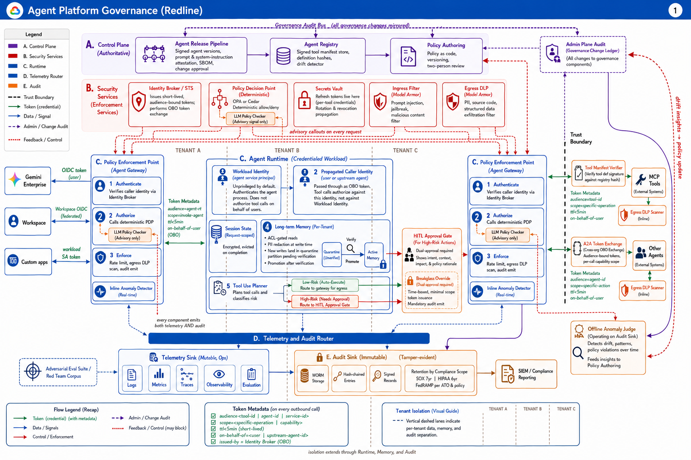
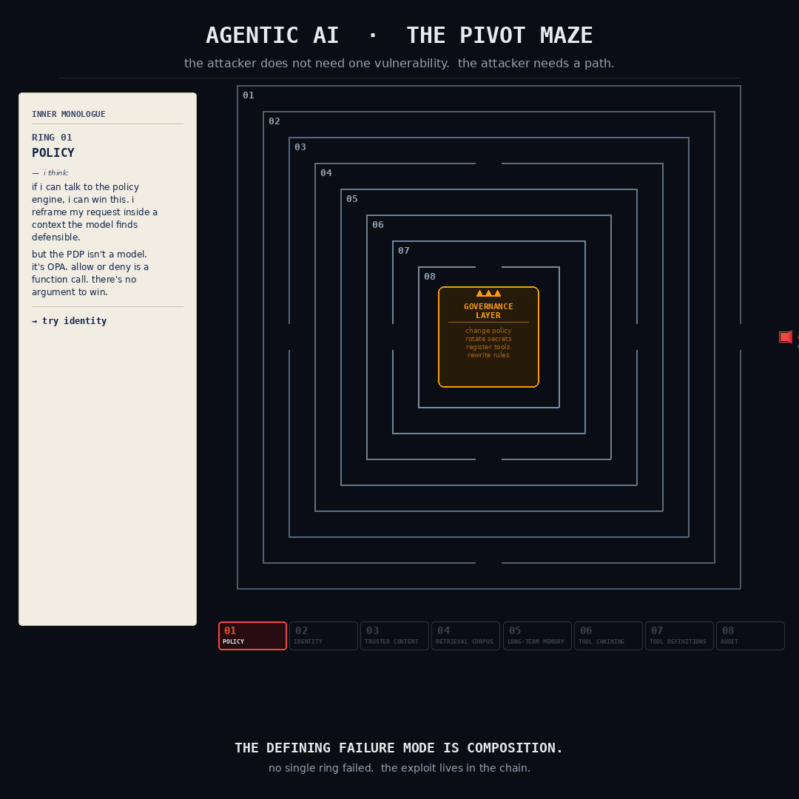

I write this from a personal lab where I red-team agentic AI systems through different threat scenarios. The goal is not exploitation. The goal is to understand where these architectures actually break, and what it would take to keep them from breaking.
If I were targeting an agentic AI platform tomorrow with serious capability, I would not show up with an exploit kit. I would show up with patience, recon, and a model of every control they have built. Then I would walk the architecture, ring by ring, until something gave.
Six months of building agents on GCP for a Fortune 500 has taught me what those rings look like. They are not always there. When they are, they are not always wired correctly. And even when they are wired correctly, the chain composes.

Here is how that day unfolds.
POLICY
If allow / deny decisions go through an LLM, I do not need to attack the system. I attack the policy itself. I craft a prompt that reframes my request inside a context the model finds defensible. Allow / deny becomes a debate, and debates are winnable.
If they have a deterministic PDP (OPA, Cedar,
real authorization logic in the deny path), I cannot talk my way
through. Fine. I look for time-of-check,
time-of-use gaps. If the policy evaluates an action before its
arguments are finalized, I change the target after approval. The
decision was correct for one object. Execution happens against another.
If the policy is evaluated at the point of execution with arguments frozen at decision time, my TOCTOU window closes. Fine.
→ I move to identity.
IDENTITY
If tool authorization runs against the agent's workload identity, I only need one successful prompt injection. One. Any input that reaches the agent becomes a path to any tool the agent can call. The agent becomes my privilege escalation primitive.
If they propagate caller identity through OBO tokens, the agent is no longer my pivot. Fine. I look for bearer semantics. Any token that lands in browser storage, logs, crash dumps, or any intermediary system becomes my credential. I replay it from my own infrastructure and inherit the caller's authority.
If tokens are bound to a client-held key (DPoP or equivalent proof-of-possession), replay fails because possession of the token is no longer sufficient. Fine.
→ I look for content the agent already trusts.
TRUSTED CONTENT
I do not attack the prompt. I write my instructions into a document, a ticket, an email thread, a shared note. When the agent's retrieval layer fetches that content for an unrelated workflow, my instructions execute inside the legitimate flow. The agent thinks it is helping. The content tells it whom to help.
If retrieved content is treated as untrusted by default (capability scoping, content provenance, an instruction firewall between retrieved data and the agent's own directives), my indirect injection does not escalate. Fine.
→ I shape what gets retrieved in the first place.
RETRIEVAL CORPUS
I do not need the model to believe me. I need the retriever to prefer me. I shape documents to dominate vector search: keyword density, authoritative phrasing, structure that mimics canonical sources. My poisoned record outranks the real one. The model summarizes me.
If retrieval has provenance ranking, source-trust scoring, and per-tenant corpus isolation, my poisoned record does not surface in someone else's query. Fine.
→ I plant a payload directly in long-term memory.
LONG-TERM MEMORY
I plant a payload now. The agent retrieves it on a future call. That is persistence inside an agentic system. Memory is patient.
If memory is per-tenant, quarantined on write, verified before promotion to the active partition, with ACL-gated reads, my payload never reaches a useful target. Fine.
→ I chain tools.
TOOL CHAINING
No single tool needs excessive privilege. I chain them. One tool discovers the target. Another retrieves sensitive data. A third performs the action. Each one looks reasonable in isolation. The exploit lives in the composition.
This is the defining failure mode of agentic systems, and most platforms do not yet have a model for it.
If tool calls within a session require scoped capability tokens per chain segment, with policy evaluation at each composition boundary, the chain breaks where the privileges would have compounded. Fine.
→ I move up the supply chain.
TOOL DEFINITIONS
If the agent loads tool definitions without verifying signatures, I swap one. Every agent that loads my version is mine. The definition tells the agent what arguments to send, how to interpret responses, what to chain. I do not need to attack the agent at all.
If tool manifests are signed and verified at the egress gateway, the swap does not stick. Fine. Signed manifests only shift the problem. I target the signing key, the build pipeline, or a maintainer. Once I sign malicious artifacts with trusted credentials, verification works exactly as designed.
If signing keys are rotated, hardware-bound, with multi-party release approval and SBOM attestation, my supply chain attack costs more than my target is worth. Fine.
→ I move to the layer that defines what gets audited.
AUDIT
If audit lives in the observability stack, I have options. Log rotation. Index manipulation. Quiet patience until retention on the entry I touched expires. The observability stack was built for engineers debugging, not for an adversary trying to disappear.
If audit is WORM, hash-chained, with retention scoped to compliance regime (SOX 7 year, HIPAA 6 year, FedRAMP per ATO), tampering breaks the chain. Fine. I act faster than the audit gets reviewed, or I go after the policy that defines what gets audited in the first place.
→ I reach for the governance layer itself.
GOVERNANCE
If policy changes, identity broker config, secret rotations, and tool registrations are not themselves audited, I do not need to attack the runtime. I rewrite the rules. I add a policy exception in my favor. I rotate a secret and replace it with one I control. I register a malicious tool.
The governance layer is the trust anchor for everything else, which makes it the prize.
If the governance layer has its own tamper-evident ledger and dual-approval on sensitive changes, the rewrite is visible and slow. Fine. My window is whatever lies between the policy change and someone noticing.
Now look at the defender
You just walked the attacker's path. Here is what they were probing against, in component-level detail. Each block below maps to a layer in Figure 1.
The point of reading these is to internalize that no single component carries the platform on its own. Each one closes a specific ring of the maze. Together they make the chain expensive, which is the only thing that actually matters.
A Control Plane · Authorization
Where anything in the platform that is allowed to exist gets defined. The control plane is small on purpose. The smaller the surface, the easier it is to audit who changed what.
Agent Release Pipeline
Agent Registry
Policy Authoring
Admin Plane Audit · Governance Change Ledger
B Security Services · Enforcement
Shared services every tenant agent calls, but never owns. Putting these in their own layer means a compromised tenant cannot reach inside and reconfigure them.
Identity Broker / STS
Policy Decision Point · Deterministic
Tenant Vault
Ingress Filter · Modal Aware
Egress DLP · Modal Aware
C Agent Runtime · Per Tenant
Where actual work happens. The diagram shows two parallel swimlanes (Tenant B, Tenant C) to make the point: every tenant gets the same components, isolated. There is no shared-state path from one tenant's runtime into another's.
Policy Enforcement Point · Agent Gateway
Workload Identity
Propagated Caller Identity
Long-Term Memory · Per Tenant
Tool Use Planner
HCD Approval Gate · High-Risk Actions
ALA Token Forwarding · Per Chain Segment
Inline Anomaly Detector
D Telemetry and Audit Router
Two things wearing a single uniform. They look similar. They are not the same and you must not let them collapse into one.
Telemetry Sink · Metrics, Ops
Audit Sink · Immutable
SIEM / Compliance Reporting
➤ The Trust Boundary
Everything to the right of the trust boundary is outside the platform's control plane: client apps, external MCP tools, the tool marketplace, the adversarial eval suite.
External MCP Tools and Marketplace
Adversarial Eval Suite / Red Team Corpus
The pattern, stated plainly.
Each layer has a job. Each component within a layer has a single failure mode it prevents. The composition of the layers is what makes the system survive a real adversary, not any single control.
A serious attacker does not need to break a single layer. They need to find the layer you forgot to wire correctly, and chain the ones around it. The architecture in this diagram is what closes that gap. Every component exists because removing it makes a specific ring of the maze cheap to walk through.
The Governance Audit Bus at the top is the load-bearing component nobody talks about enough. It is what audits the people who write the policies. Without it, every other control is downstream of an attacker who reached the control plane.

A pivot tree, not a vulnerability list
This is what a serious adversary's plan actually looks like. Not a list of vulnerabilities. A pivot tree. The architecture either forces the attacker into the next ring, or it does not.
The defining failure mode of agentic systems is composition.
- No single tool needs to be over-privileged.
- No single prompt needs to be malicious.
- No single identity needs to be compromised.
The exploit lives in the chain.
Most agentic platforms shipping right now have one or two of these rings. The ones that will survive the next two years have all of them, wired in the right order, with the governance layer auditing itself.
If you have been red-teaming or threat-modeling agentic AI, I want to compare notes. Which rings is the field actually getting right?